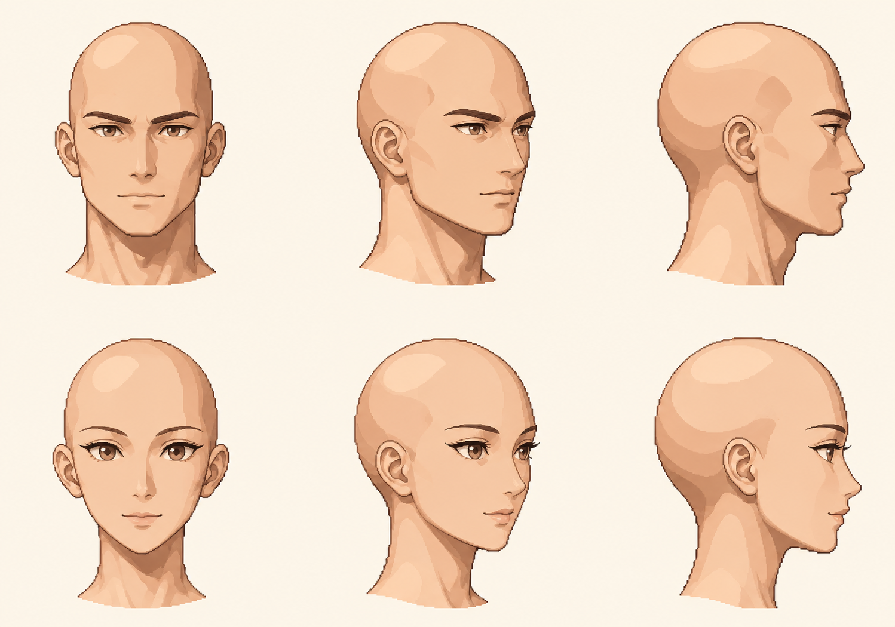

왼쪽 그림은 새로 생성한 성인 얼굴의 미적 방향 시안입니다. 해부학 교본이나 실제 회전 모델이 아닙니다. 가운데는 현재 코드가 그리는 모델입니다. 기준점은 수동 근사값이며 조절할 수 있습니다.
얼굴 방향 시안
실제 모델
같은 머리 크기로 겹침
대조 중인 차이
눈 사이 거리, 남성형 눈썹의 두께·높이, 입의 높이, 코끝과 입술의 돌출, 눈확·광대의 명암을 우선 대조합니다. 눈의 위치를 바꾼 뒤 옆면에서 안구가 튀어나오던 시안은 채택하지 않고 깊이를 다시 수정했습니다.

실제 모델은 여전히 수정 중이며 사용자 인체 승인을 받지 않았습니다.